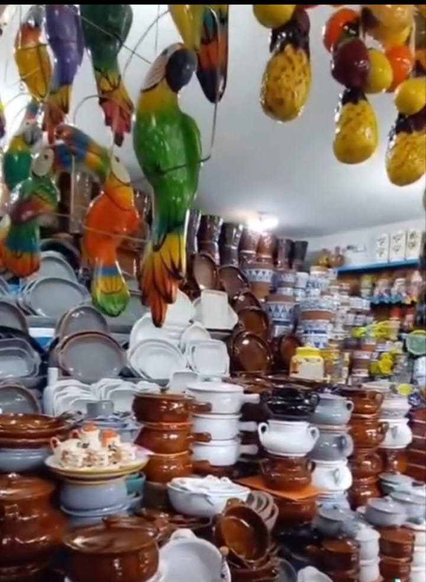

El Mercado de Artesanías de Valle de Bravo es el principal punto de reunión para adquirir piezas elaboradas por manos locales y regionales en este Pueblo Mágico. Construido en 1984 con el objetivo de proteger y difundir el talento artesanal del Estado de México, concentra creaciones tradicionales de las etnias mazahua, otomí y matlatzinca.

Alfarería y cerámica. Destacan las piezas de barro café vidriado (típicas del barrio de Otumba) y la cerámica de alta temperatura como vajillas, macetas y jarrones.
El mercado en Valle de Bravo se divide principalmente en dos espacios clave: el Mercado Municipal (enfocado en gastronomía y abastos) y el Mercado de Artesanías (enfocado en arte popular y creaciones locales). El Mercado Municipal de Valle de Bravo y el Mercado de Artesanías son el corazón comercial y cultural del municipio, fundamentales tanto para la economía local como para el abasto diario de los habitantes y visitantes.
Textiles tradicionales. Encontrarás prendas bordadas, finos deshilados, rebozos, manteles y tejidos en lana elaborados en telar por artesanos mazahuas. Cestería de ocoxal. Se elaboran canastos, petates, tortilleros y artículos decorativos tejidos con agujas de pino secas, muy característicos de la zona boscosa.
GASTRONOMIA